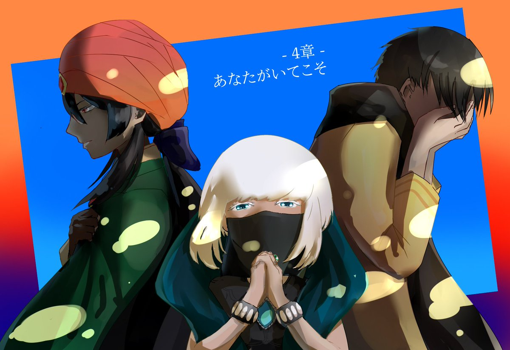
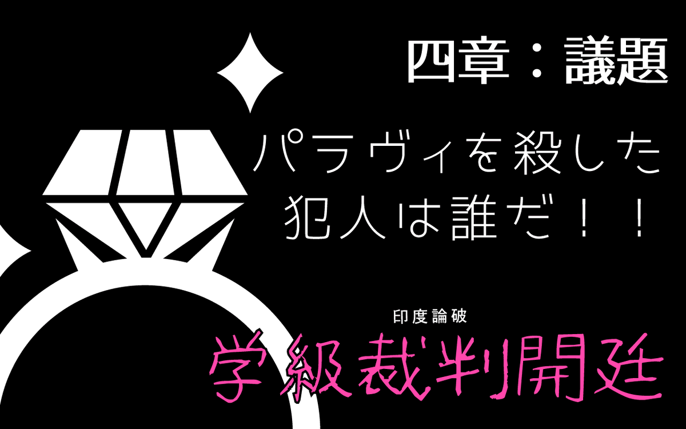
「まずは現場から確認していきましょう」
【A-1 コトダマ・遺体】
外傷はなく、衣服の乱れがないことから誰かと争った様子もない。
【B-1 コトダマ・理科室1】
廊下側の窓ガラスが割れている。
【B-2 コトダマ・理科室2】
全ての窓の鍵が接着剤で固められており、内側から開かないようになっている。また、扉の鍵も内側から操作できないように細工されていた。
【B-3 コトダマ・理科室3】
換気扇にビニールが貼られ、塞がれている。
【B-4 コトダマ・理科室4】
薬品棚付近の床に、4つほどの瓶が転がっている。薬品棚の上段のスペースが空いていることから、この棚から落ちたのかもしれない。
【B-5 コトダマ・職員室】
キーラックから理科室の鍵だけがなくなっている。
【B-6 コトダマ・理科室5】
転がっていた瓶のうち一つが、蓋があき、割れた状態で転がっている。ラベルに注意書きがあった。
『本薬品は強い毒性があり非常に気化しやすいため、使用の際は必ず防毒マスクを着用し、十分な換気を行ってください。』
「現場はこんなものですかネ。もう一人の被害者について見た方はいますか？」
【C-1 コトダマ・負傷者】
手から流血しており、腕や足にも浅い切り傷が残っている。目を覚まさないが、容態は落ち着いているようだ。
【D-1 推理】ハナコ
モハメドは閉じ込められているパラヴィに気がつき、助けるために窓ガラスを割って侵入し、負傷したと考えられる。パラヴィを助ける前に気化した毒を吸い気を失ったのだろう。パラヴィとモハメドは仲が良かったし、モハメドはクロじゃないと考えていいと思う。
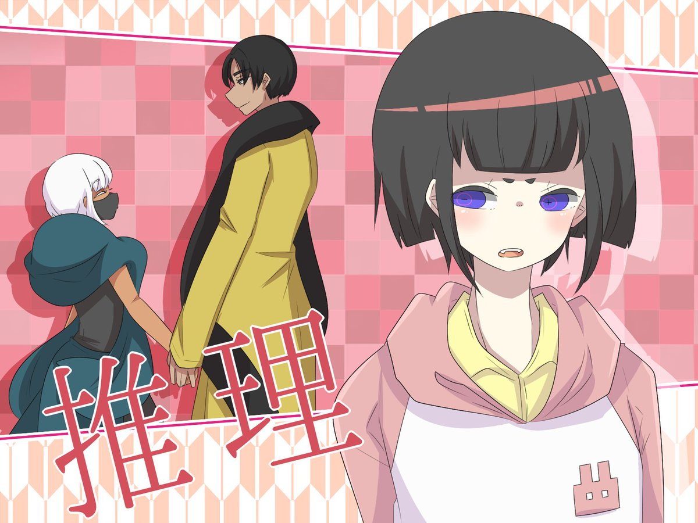
【D-2 提案】シン
事件当日、モハメドとパラヴィ以外に校舎に行った人がクロである可能性が高いと思う。その日、みんな何をしていたかアリバイを確認していこう。
【E-1 証言】ハナコ
その日はアナウンスが鳴るまで部屋を出ていない。朝から天井を見て過ごしていた。正午ごろ、隣室のモハメドの部屋のドアの音がしたのを覚えている。多分、その後に校舎に向かったんだと思う。
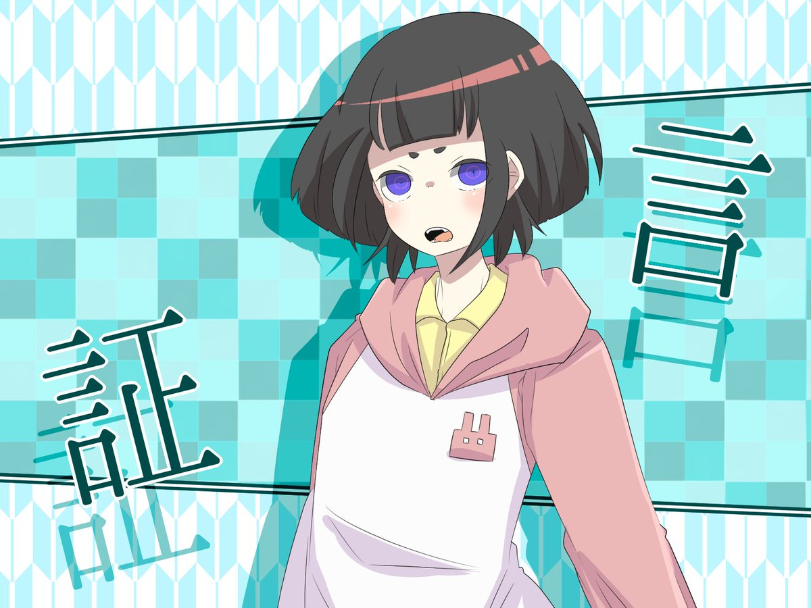
【E-2 証言】シン
その日の午前はエクとダンスルームで食べ物しりとりをして遊んでいた。途中、アニク、ラーフルと合流し4人で遊んでいるところでアナウンスが聞こえた。
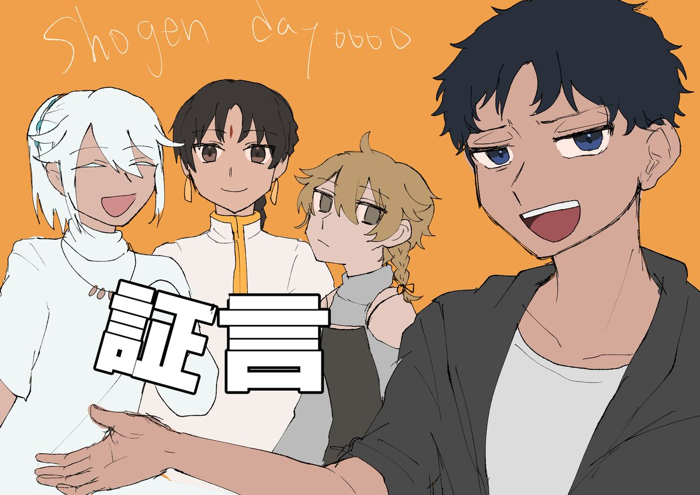
【E-3 証言】エク
その日の午前はシンとダンスルームで食べ物しりとりをして遊んでいた。途中、アニク、ラーフルと合流し4人で遊んでいるところでアナウンスが聞こえた。
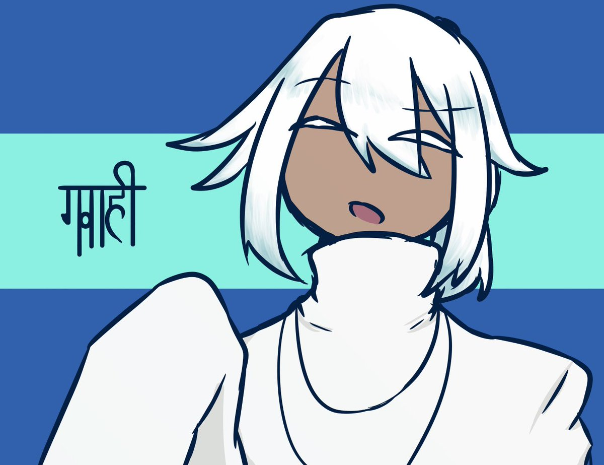
【E-4 証言】クリシュナ
その日はずっと部屋にいた。せりの元気が無く、心配で離れられなかった。日が昇った頃、窓の外にいたパラヴィと目が合い、手を振った。パラヴィはその後、1人で一年生エリアを出て行った。
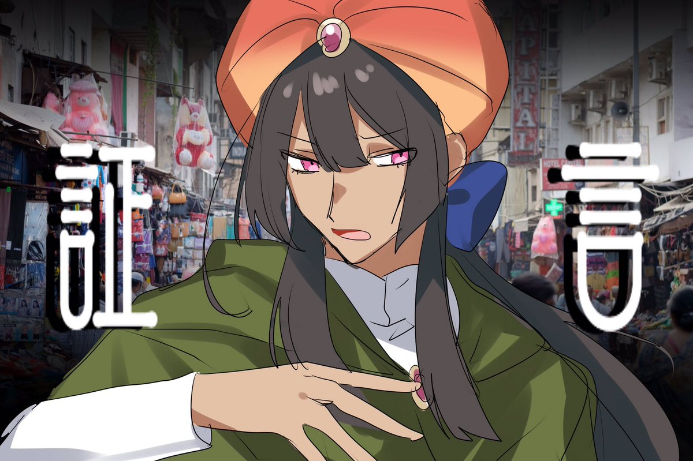
【E-5 証言】アーシャ
その日はずっと部屋にいて、兄のドゥルーヴと電話でおしゃべりしていた。その時、ドゥルーヴも自室にいたはず。
「となると事件発生時校舎にいたのはモハメドくんとパラヴィちゃんだけ… ということですか？」
【F-1 推理】クリシュナ
パラヴィは上段の薬品に手を伸ばし、誤って薬瓶を落としてしまったんじゃないだろうか。
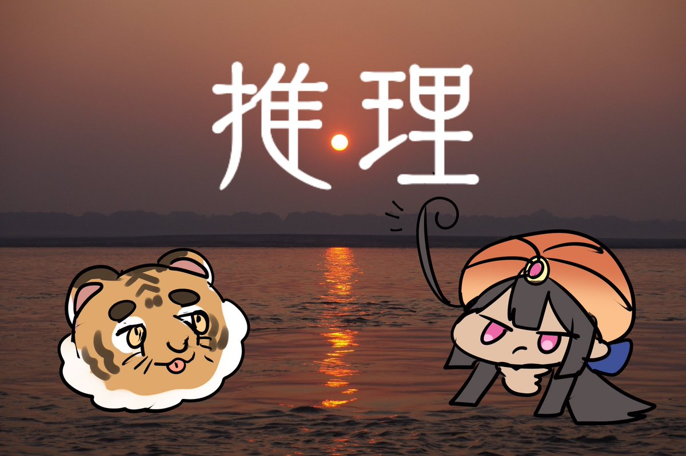
【F-2 反論】エク
したら理科室から出ればいいだけのこと。内側から出られないようになっていたのはおかしよ。クロが理科室にパラヴィクンを連れ込んで、毒薬瓶を投げ入れて鍵をかけ閉じ込めたんだと思うね。
アリバイで嘘をついている人がいるよ！
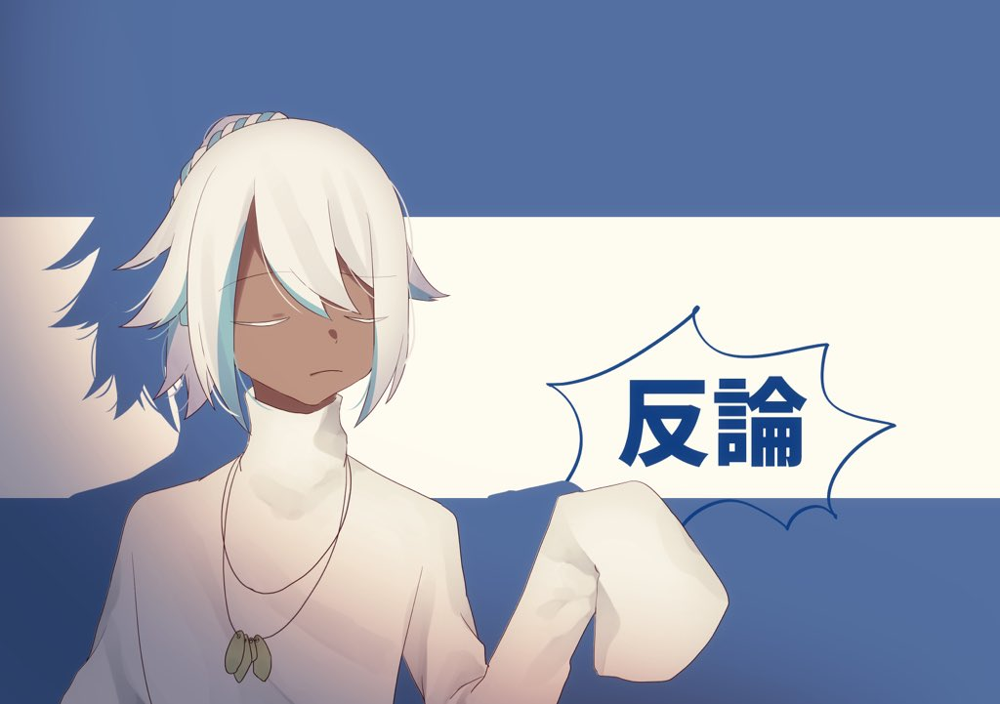
【F-3 疑問】アーシャ
クロはどうしてパラヴィを殺したのだろう。
「アーシャちゃん素敵な疑問提起ですヨ！ 動機がわかればおのずとクロが見えてくるハズです」
「ま、今回は動機しかなかったっていうか〜 天才的なモノガネちゃんが沢山の特典を用意しましたから、殺すメリットしかないですヨ。私が用意したお得な特典、覚えてます？」
「ふふ、以下の三つですネ！
・誰かが死んだ時点で食料共有
・黒幕が死んだらコロシアイ生活終了
・黒幕を殺すと1億ルピーが手に入る
ご飯が食べたい。コロシアイを終わらせたい。一億ルピーが欲しい。どれも素敵な動機ですヨ！」
「ところで皆さん、事件発生から数日遡った日のことを覚えていますか？」
【G-1 コトダマ・アディティ1】
肌の様子に変化がなく、数日たったにも関わらず腐敗の気配がない。
【G-2 コトダマ・アディティ2】
服の内側に型番と注意書きを見つけた。
『・加圧、加熱、火中投下、水没させないでください。故障や破損の恐れがあります。
・本器の行動記録を定期的に確認して下さい。異常な行動が見られた場合は速やかに電源を落とし、管理センターまでご連絡ください』
【G-3 コトダマ・アディティの部屋】
印刷された行動記録が残っている。
毎日、全ての生徒の部屋を回っていたようだが、パラヴィの部屋に行った回数が少し多い。
【H-1 推理】シン
アディティは頻繁にパラヴィへ声をかけていた。アディティは黒幕の道具であると考え、その黒幕をパラヴィだと考えたのではないだろうか。
「ナイス推理！パラヴィちゃん黒幕説ですネ！ モノガネも彼女が黒幕なんじゃないかって一瞬思ったんですよ。まー私は本当の黒幕知ってますけど」
「アディティは年齢が若く体の小さな彼女のことを気にかけていただけですよ」
「と、まあ、アディティの謎も解けたことですし、改めてクロ探しを…… 現場の物的証拠はほとんど出てますネ。となればあとは目撃情報とか…」
＊現場の情報は全て出した。全員のアリバイを確認した。クロの動機を推測した。だが、クロが分からない
＊何か、見落としていたものは？疑うべきものは…？
＊各々が記憶を探り、静まり返った裁判場に、コツ、コツ、と足音が聞こえてきた
＊誰かがやってくる音だ
＊ふと、顔を上げた先に──
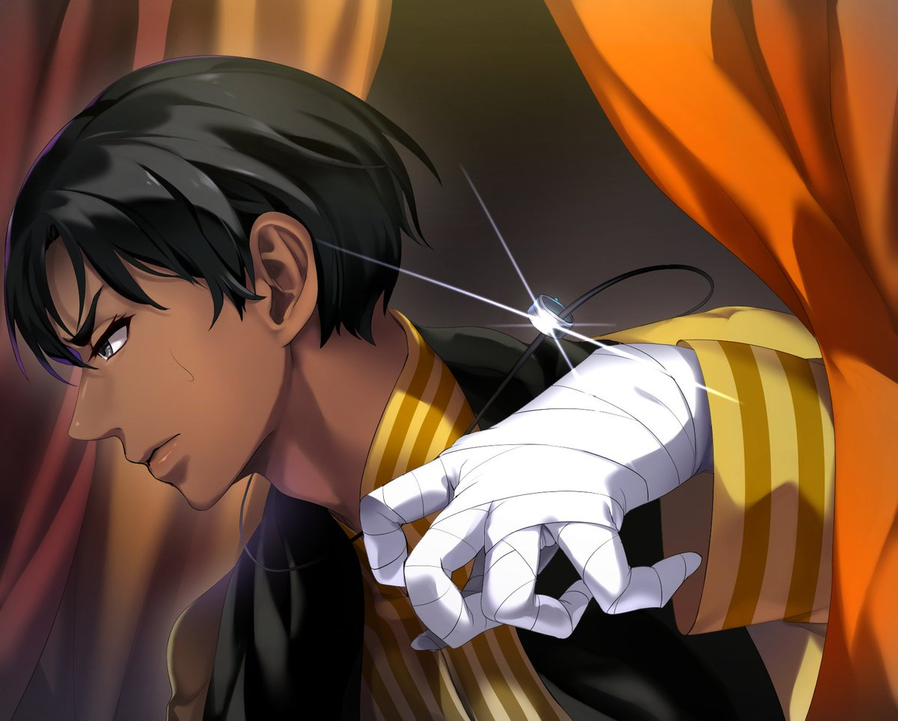
モハメド「…………貴様が一言発言すれば済む裁判をだらだらだらだらと………………（どこかを睨んで）」
【I-1 証言】モハメド
校舎へ向かった際、校舎から出てきたクリシュナとすれ違った。その後、校舎内でパラヴィの声に気がつき、理科室へと向かった。校舎には他に誰もいなかったはず。クロはクリシュナで間違いない。
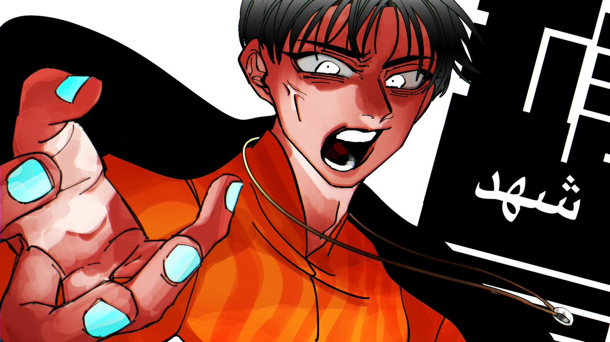
🐯「ｯｳﾞｳﾞｳﾞ…！！！(主人を守るように前に立ち)」
クリシュナ「っわたしは、わたしは……！！」
✦理論武装 開始
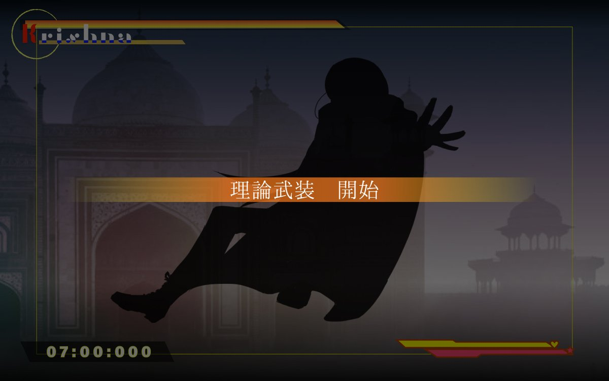
【理論武装1】
「違う わたしには彼女を殺す動機などない」
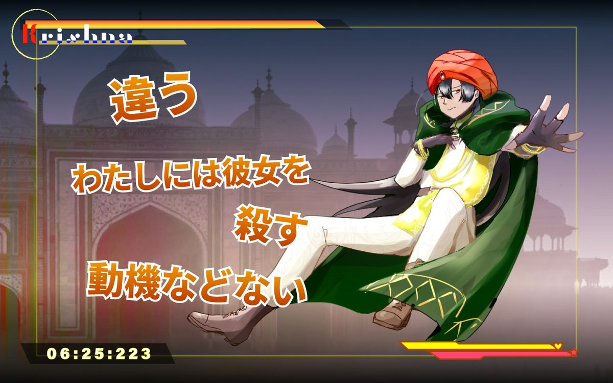
【理論武装2】
「彼女を黒幕だと思ったことはない 賞金にも興味がない」
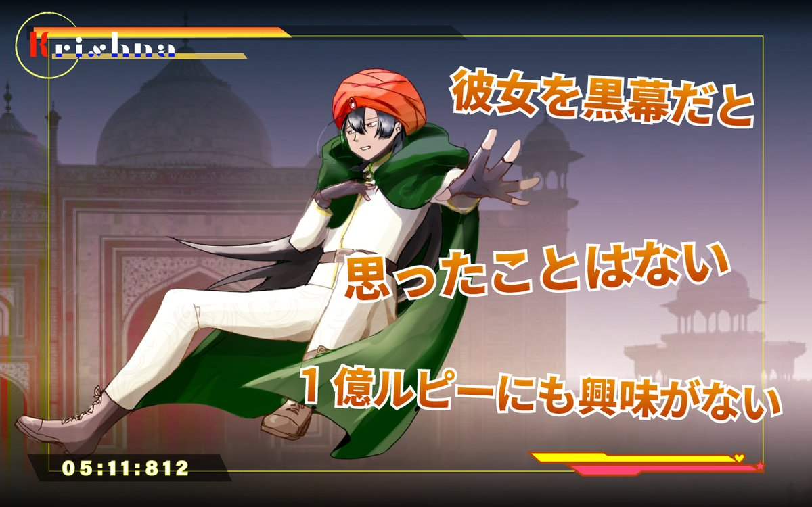
【理論武装3】
「確かにわたしは一度校舎には行ったが、一階の教室を調べていただけで理科室には行っていない」
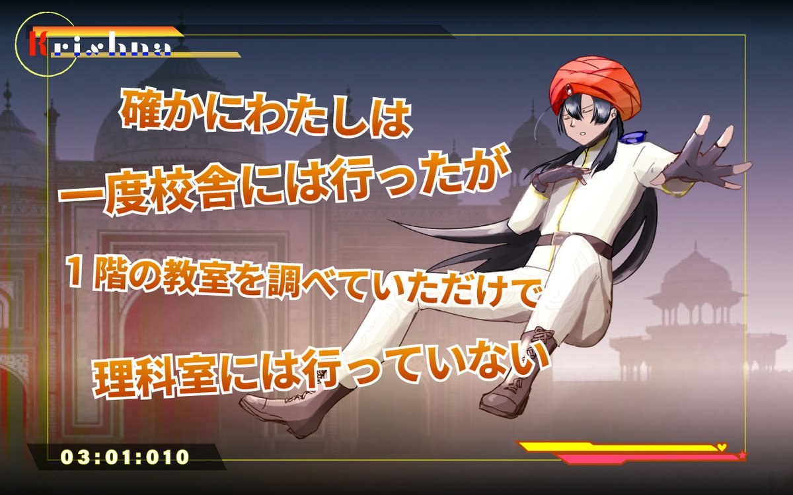
【J-1 論破】モハメド
ここに来る前に、クリシュナの部屋を調べさせてもらった。部屋から薬瓶の蓋と理科室の鍵を見つけた。これが何よりの証拠だ。
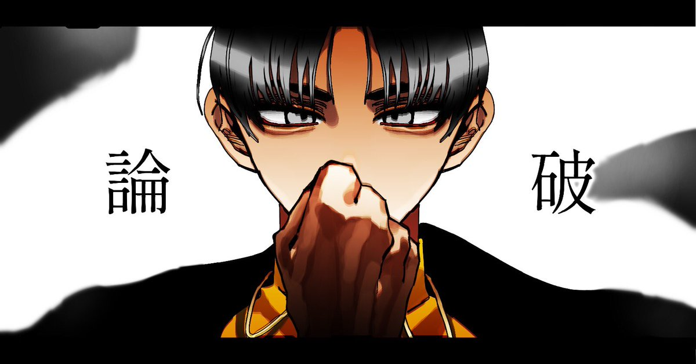
【break!!】
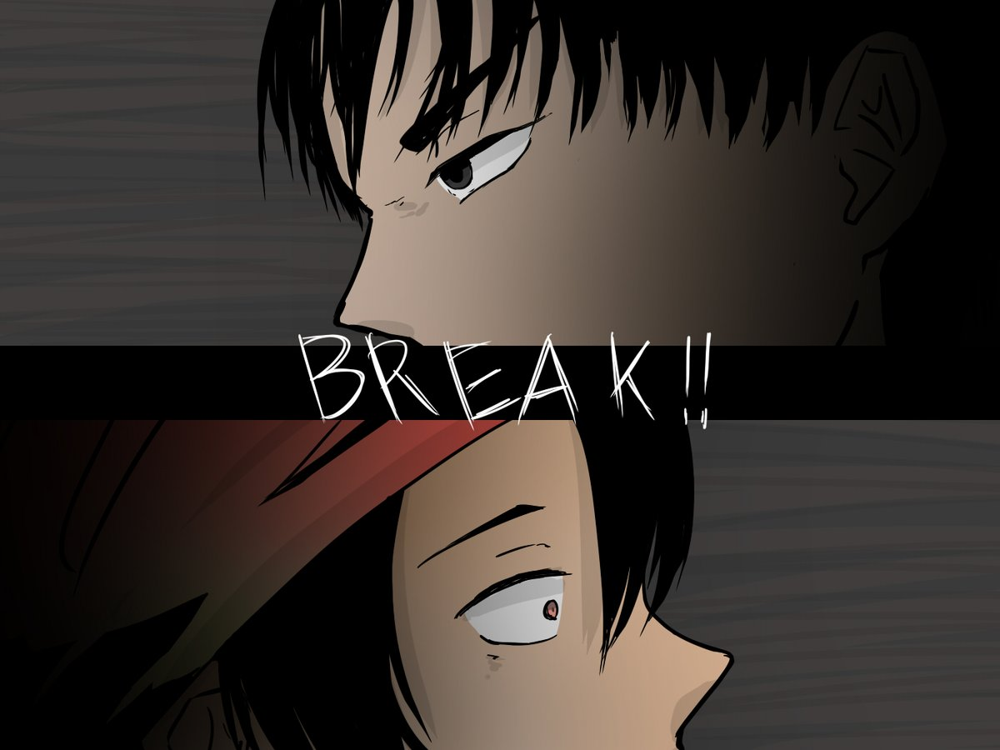
モハメド「話せ。」
クリシュナ「(ぷいっと下をむく)」
モハメド「…………（証言台から離れクリシュナくんに近づいて）」
＊張り詰める空気が漂う中、モハメドがクリシュナに手を伸ばした
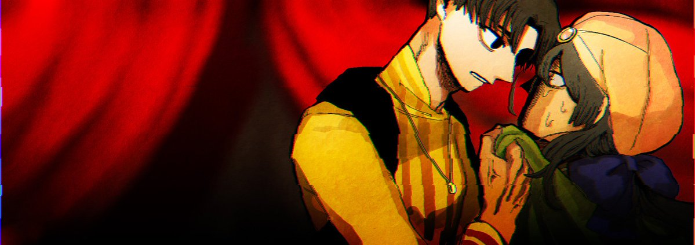
モハメド「話せと言っている。貴様が、パラヴィを殺した理由を一から十まで全て、この場で。」
🐯「ゥヴガルルルルルルル！！！！！！(なにすんだ！！！！)」
クリシュナ「ッせり……！静まれ」
クリシュナ「（チラ、目線を下に向け）何故彼女を選んだ。何故彼女じゃなければいけなかった。何故貴様はあのような卑劣な手段を取った。」
クリシュナ「(せりを牽制してからモハメドくんの目を見て)…パラヴィを黒幕だと疑ったからだ。それだけだ。」
モハメド「……ッ彼女が、助けようとしていたのは！！貴様含めた全員だったんだぞ！！！！そのために、動いていたんだ、彼女はッ！！！！それなのに、貴様は、この、……ッ、（唇を噛み、手を離して）」
クリシュナ「………(黙り込む)」
モハメド「誰かが動かなければいけなかったさ、そうだ、誰かがやらねばならなかった。そうしないと、生きれなかった。けどッ、あの子は、あの子だけは、……、」
モハメド「一番幼かった。一番、守ってやらねばいけない存在だった。分かってるだろ。貴様は、分かっていて、その罪を背負う事を覚悟した上で、この場に来たんだと信じていた。」
＊＊投票後＊＊
「クリシュナくんのおしおきを執行します。クリシュナくん、最後に言い残すことは？」
「……………………」
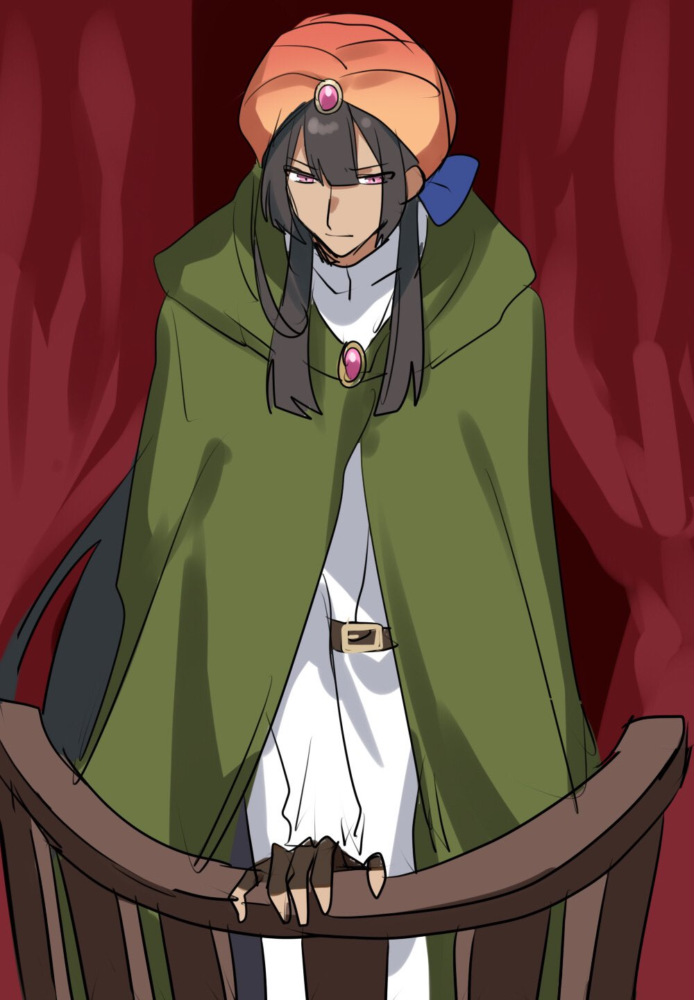
「ない。するなら早くしてくれ」
🐯「！」
🐯「ｱｳ!ｱｳｱｳ!!!!!!(主人の周りをくるくると周り、マントを引っ張る)」
クリシュナ「っ、せり……離れろ」
🐯「ｱｳｩ!!!ｱｳｱｳｱｳ!!!(離れようとしない…)」
クリシュナ「離れろと言っているんだ！！！！！！！！！」
🐯「(ビクッとしたあと離れる)」
クリシュナ「…………いいか、せり わたしは悪い事をした。人として絶対にしてはならないことを その報いを受けるのは当然のことなんだ。」
クリシュナ「…………いいか、せり わたしは悪い事をした。人として絶対にしてはならないことを その報いを受けるのは当然のことなんだ。」
クリシュナ「だからわたしはその報いを心して受ける。だが、おまえは………おまえは生きて、帰れ。父さん、母さん、姉さんたちや兄上たちの元へ 帰るんだ……いいな。」
クリシュナ「…みんな、時間を取らせてしまいすまなかった。モノガネ、やるならやってくれ」
＊どこからか飛んで来た鎖が、クリシュナの首を捉えた。
＊それは力強くクリシュナを引き、瞬く間に彼だけを連れ去った。